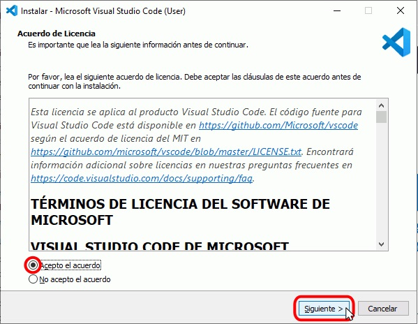
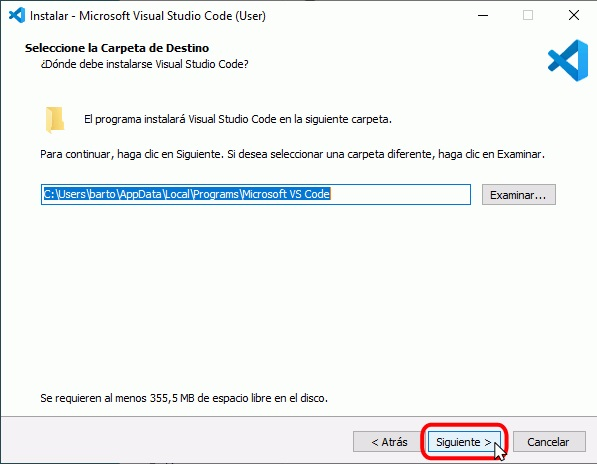
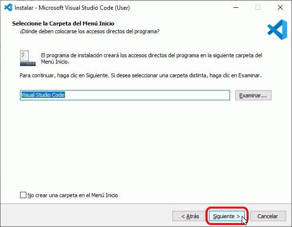
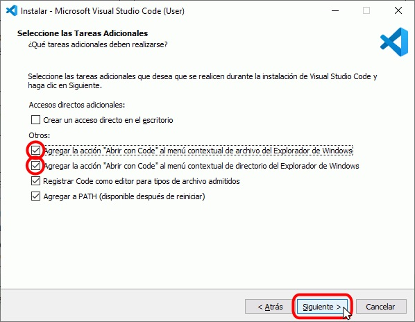
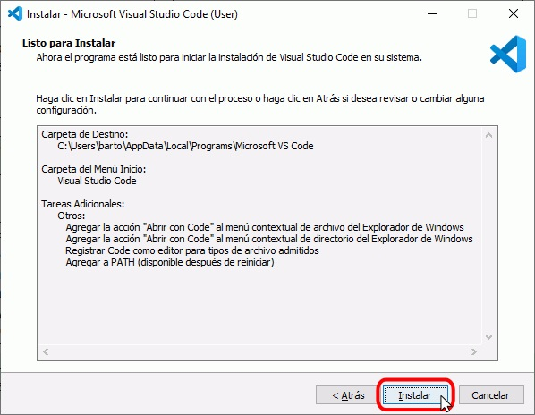
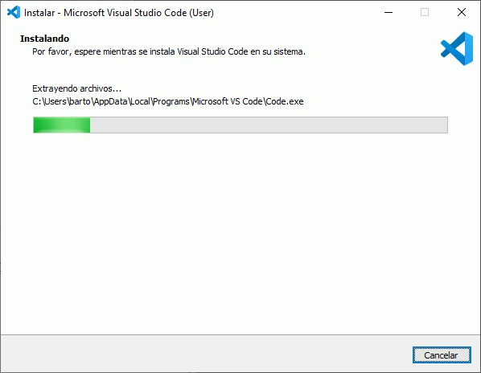
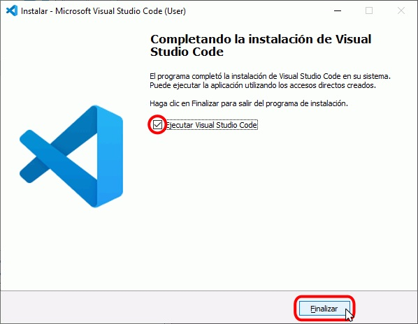
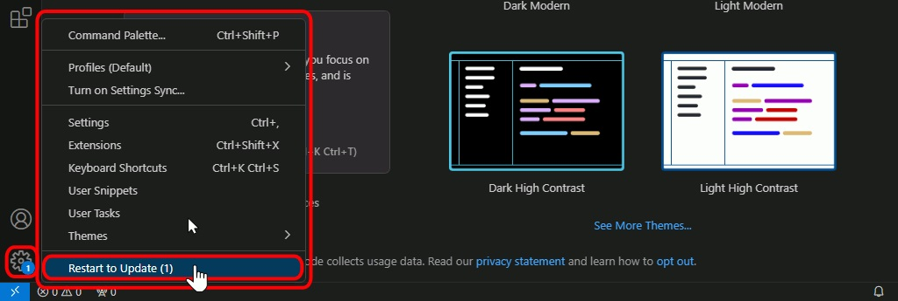
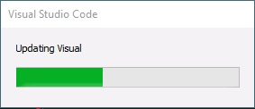
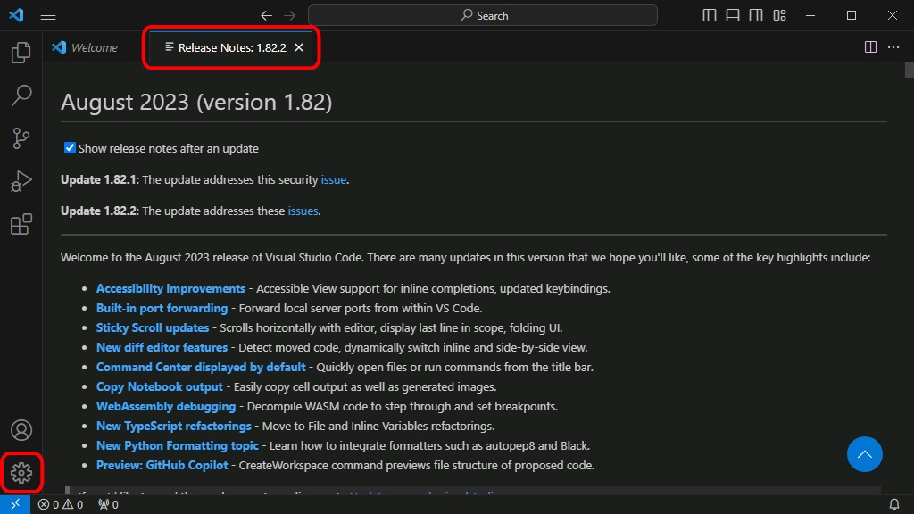

Kode-editorea
Kode-editorea funtsezko tresna da softwarea edo programazioa garatzen duen edonorentzat. Programa baten iturburu-kodea idazteko, editatzeko eta antolatzeko aukera ematen duen programa da, sintaxia eta kodea idaztea eta ulertzea errazten duten beste funtzionalitate batzuk nabarmenduta.
Hainbat kode-editore mota daude, testu-editore soiletatik hasi eta garapen-ingurune integratuetaraino Integrated Developmen Environmen (IDE, ingelesezko sigletan). Kode editoreen adibide ezagunak dira Visual Studio Code, Sublime Text eta Atom.
Kode-editorea iturburu-kodea hainbat programazio-lengoaiatan idazteko erabiltzen da, hala nola Java, Python, HTML, CSS, JavaScript, beste askoren artean. Kodea idazteko eta editatzeko aukera emateaz gain, hainbat ezaugarri ere eskaintzen ditu, hala nola kodearen autoosaketa, kodean nabigatzea, erroreak araztea eta bertsioak kontrolatzeko tresnekin integratzea.
Laburbilduz kode-editorea funtsezko tresna da programatzaileentzat, programen iturburu-kodea eraginkortasunez eta modu produktiboan idazteko, editatzeko eta antolatzeko aukera ematen baitie. Gai honi buruz gehiago ikasi nahi baduzu, iturri fidagarriak kontsultatzea gomendatzen dizut, hala nola programazioan espezializatutako guneen kode-editoreen eta lineako tutorialen dokumentazio ofiziala.
GARRANTZITSUA: Badira web-garatzaileon lana erraztu dezaketen kode-editoreak. Editore horiek kolore desberdinak erabiliz hitzak nabarmentzen dituzte kodearen zati bakoitza identifikatzen laguntzeko, proiektuaren fitxategiak zerrendatzen dituzte alboko panel batean, fitxategi askorekin batera lan egin ahal izateko, luzapenak eskaintzen dituzte euren ahalmenak handitzeko eta horrelako hamaika aukera ematen digute. Makina bat editore daude, doakoak eta ordaintzekoak. Horra hor horietako batzuk.
Visual Studio Code
Atom
Brackets
Sublime Text
Notepad++
CoffeeCup HTML Editor
TextMate
Guk Visual Studio Code erabiliko dugu.
Visual Studio Code (VSCode)
Visual Studio Code, VSCode izenez ere ezagutzen duguna, kode-editore bat da, doakoa, kode irekikoa eta plataforma anitzekoa. Garatzaileen artean erruz zabaldu da tresna arin eta praktikoa delako. VSCode gai da imajina dezakegun edozein programazio-hizkuntzatara egokitzeko.
Ikus dezagun zertan lagun gaitzakeen VSCodek.
- Iturburu-kodea editatzen eta garatzen, karaktere joko zuzenekin, sintaxia nabarmenduz edota kode zatiak bere kabuz osatuz
- Proiektuen lan-karpetak eta fitxategiak kudeatzen, tresna erabilerrazak eskainiz.
- Bertsioak kontrolatzen, Git-ekin integratuta eta haren tresnak eskura jarriz VSCode-tik irten gabe.
- Lengoaia asko eskaintzen, garatzaile komunitateari esker editoretik irten gabe instala ditzakegunak.
- Live Share-rekin lan egiten, lankideekin editatuz eta araztuz, ikaskideekin txateatuz, terminalak eta zerbitzariak partekatuz, iruzkinak ikusiz...
- Bezeroaren aldea garatzen, VS Code egokitua dagoelako erabili ohi diren HTML, CSS eta Javascript bezalako lengoaietara.
- Zerbitzariaren aldea garatzen, hamaika lengoaiarekin jarduteko aukera eskaintzen baitu: PHP, Python, Go, Java, NodeJS, Ruby eta beste askorekin.
- Aplikazioak eta script-ak arazten, Markdown dokumentuak idazten eta editatzen, Zereginak eta lan-fluxuak automatizatzen...
Visual Studio Code aplikazioa instalatzea
Visual Studio Code lortu
Visual Studio Code deskargatzeko jo haren webgune ofizialera: https://code.visualstudio.com/ . Azken bertsio egonkorra deskarga daiteke (ezkerrean dagoen botoi urdin handiaren bidez) edo deskargen orrira sar daiteke (goian eskuinaldean dagoen botoi urdin txikienaren bidez):
Deskargen orrialdetik hainbat sistema eragiletarako bertsioak deskarga daitezke (32/64 bits, Windows/GNU/Linux/Mac). Windowsen, gainera, System installer bertsioak daude eskuragarri, Programa-fitxategien karpetan instalatzen direnak, eta User installer bertsioak, erabiltzaile-karpetan instalatzen direnak. 2018ko udatik, Microsoftek User installer bertsioa gomendatzen du. Windows deskarga lotura: Visual Studio Code (64 bits, gomendatua)
Oharra: Erabilitako irudiak Visual Studio Code 1.82 (User installer) enpresarenak dira, 64 bitekoak. Ondorengo bertsioak desberdinak izan daitezke.
Egin klik bikoitza Visual Studio Code instalatzailearen gainean instalazio-laguntzailea martxan jartzeko eta aukera instalaziorako hizkuntza.
- Lehenengo pantailak instalazioarekin jarraitzeko Visual Studio Code lizentzia onartzea eskatzen du:

Editorea(4): VSCode-ren Lizentziak onartzeko leihatila - Bigarren pantailak non instalatu hautatzeko aukera ematen du (User installer bertsioa denez, instalazio-direktorioa erabiltzailearen karpetan dago, ez programa-fitxategietan):

Editorea(5): VSCode non instalatu erabaki - Hirugarren pantailak hasierako menuko karpetaren izena aukeratzeko aukera ematen du:

Editorea(6): VSCode-ren erroko karpeta izendatu - Laugarren pantailak aukera ematen du instalazioaren ondoren ataza gehigarri batzuk aukeratzeko. Pertsonalki, "Gehitu ekintza..." laukitxoak markatzea gomendatzen dut:

Editorea(7): VSCode-ren ataza gehigarriak - Azkenik, aurreko pantailetan aukeratutako aukerak agertuko dira. Instalazioa hasteko, sakatu Instalatu.

Editorea(8): VSCode-ren instalazio laburpena - Ondoren, Visual Studio Code instalatuko da.

Editorea(9): VSCode instalatzen - Instalazioa osatu ondoren, amaierako pantaila agertuko da. Visual Studio Code duen Git erabili behar baduzu, desmarkatu "Exekutatu Visual Studio Code" laukitxoa, egin klik Amaitu botoian.

Editorea(10): VSCode instalatuta exekutatzeko prest
Lehen exekutatzea
Instalazioaren ondoren Visual Studio Code irekitzen den lehen aldian, programari ongietorria emateko orrialde bat erakusten da:
Visual Studio Code eguneratzea
Visual Studio Code automatikoki eguneratzen da bertsio berri bat argitaratzen den bakoitzean. Visual Studio Code-k ohar bat erakusten du eguneratzea deskargatu denean eta eguneratzea berehala aplika dezakegu, hurrengo pantaila-harrapaketetan erakusten den bezala. Nolanahi ere, eguneraketa aplikatzea eskatu edo ez, Visual Studio Code ixten badugu, eguneraketa berriro irekitzean aplikatuko da.
- Eguneratze bat dagoenean, Visual Studio Code sistemak zenbaki bat erakusten du beheko ezkerreko gurpil horzdunaren ikonoan. Egin klik gurpilaren gainean eta aukeratu "Restart to Update" (Berrabiarazi eguneratzeko) aukera:

Editorea(12): VSCoderen eguneratzeko pantaila - Visual Studio Codek eguneraketa instalatuko du:

Editorea(13): VSCoderen eguneratzen - Berrabiaraztean, erlaitz berri batean agertuko dira instalatutako bertsioaren notak, eta gurpil horzdunaren ikonoak ez du zenbakia erakutsiko:

Editorea(14): VSCoderen agurreko pantaila